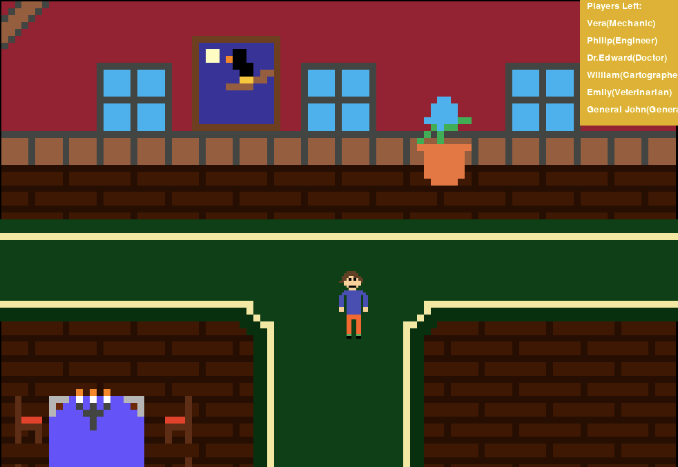

This project demonstrates my ability to work with graph-based data structures and algorithms in C++. The program processes graph data and analyzes paths between nodes while focusing on efficiency and algorithmic design. Through this project I strengthened my understanding of structured programming, algorithm implementation, and memory management in C++. This work reflects the types of computational problem-solving techniques commonly used in software engineering and systems development.
This project implements Dijkstra's algorithm in C++ to calculate the shortest path between nodes in a weighted graph. The program determines the minimum distance from a starting vertex to all other vertices using a greedy algorithm approach. This project highlights my understanding of graph traversal, algorithm optimization, and problem-solving using C++. Algorithms like Dijkstra's are widely used in networking, GPS routing, and many real-world pathfinding systems.

This project is a 2D murder mystery detective game built in Python using the Pygame library. The player explores a pixel-art mansion, moves through hallways and rooms, and interacts with different suspects to gather clues about a murder. Each character has a unique role, and the player must investigate dialogue, examine evidence, and analyze clues before making a final decision about who committed the crime. The game uses sprite rendering, keyboard input, and event-driven programming to control player movement, interactions, and dialogue prompts. This project demonstrates my ability to build interactive graphical applications while applying core programming concepts such as game loops, conditional logic, event handling, and user interaction.
Play on CodeHS